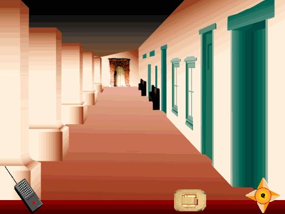

Multimedia Projects
The following illustrations provide examples of the imagery currently being created for a CD-ROM project entitled This Old Mission. To date, Ken Halla -- CSUMB Graduate student and multimedia consultant -- has invested hundreds of hours developing the storyboard and graphics for the project in question. When completed, this byproduct of the Alta California Mission Research Project at San Juan Bautista will provide students and teachers with a virtual history tour and educational resource for the teaching of California archaeology, art and history. When completed, it is anticipated that This Old Mission will serve to document the archaeology, art, history, and culture of the community of San Juan Bautista.
The Storyboard Graphics illustrated below provide (a) an introductory image from the Macromedia Director video introduction (Storyboard Graphic 1), (b) a still image from the virtual walkthrough portion of the CD-ROM (Storyboard Graphic 2), and (c) one example of a virtual text with clickable page content, and audio and visual components. The task bars at the bottom of the screen provide a preliminary version of the navagational and interactive components of the program completed to date.
For Further Information on this or related Institute Projects, contact Ken Halla at ken_halla@monterey.edu, or Ruben Mendoza at ruben_mendoza@monterey.edu.

Storyboard Graphic 1

Storyboard Graphic 2

Storyboard Graphic 3
Graphics Illustrations by Ken Halla, 1998. Text by Ruben Mendoza, 1998. All rights reserved.